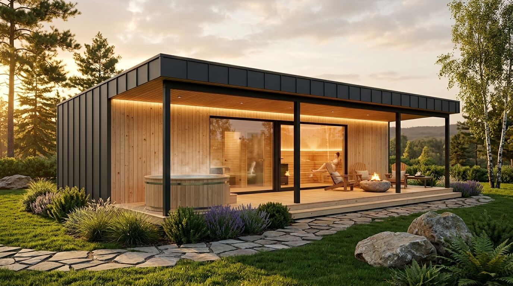
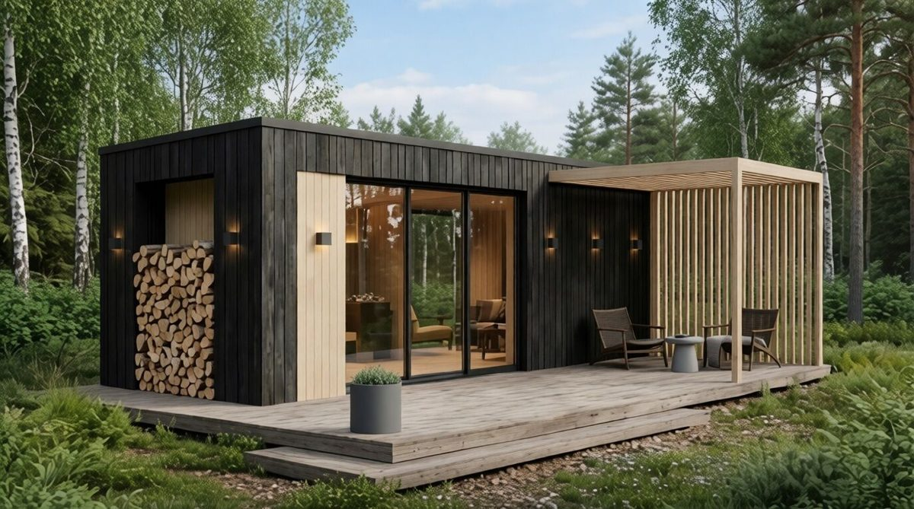

МОДУЛЬНЫЕ ДОМА И БАНИ В ОМСКЕ
Ваш участок.
Ваш дом.
Модульные дома, дачи и бани с собственного производства в Омске. Подберём проект, планировку и отделку под ваши задачи.
Посмотреть домаСобственное производствоВАРИАНТЫ И КОМПЛЕКТАЦИИПодберём под ваш участокПосмотреть варианты
АРХИТЕКТУРА И ДЕТАЛИ
Выберите формат.
Продумайте участок.
Сравните характер архитектуры и устройство террасы, затем обсудим нужную комплектацию.

Проект с террасой
МСКА-УЮТ · Омск
Дом и терраса.
Одно пространство.
Обсудим, как разместить модуль на участке и организовать место для отдыха. Планировку и отделку подберём под ваш сценарий.
Обсудить мой проект